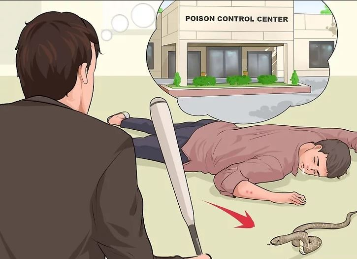

Basic First Aid
METHOD 4: Treating Rarer Cases in First Aid Scenarios
1. Help someone who is having a seizure.
Seizures can be scary things for people who've never experienced them before. Luckily, helping people with seizures is relatively straightforward.
Clear the surroundings to protect the person from hurting themselves.
Activate emergency medical services if the seizure lasts more than 5 minutes or if the person is not breathing afterward.
After the episode has ended, help them to the floor and put something soft or flat under their head. Turn them onto their side to ease breathing, but do not hold the person down or try to stop their movements.
Be friendly and reassuring as their consciousness returns and do not offer food or water until fully alert.
2. Help someone survie a heart attack.
It helps to know the symptoms of heart attack, which can include rapid heartbeat, pressure or pain in the chest, throat or even pain in the armpit, and general unease, sweating, or nausea. Rush the person to the hospital immediately while giving them an aspirin or a nitroglycerin, which the person should chew.
3.Identify someone having a stroke.
Again, knowing the symptoms of stroke is important. They include temporary inability to talk or understand what is being said; confusion; loss of balance or dizziness; unable to raise their arms and severe headache with no precursor, among others. Rush a person you suspect has had a stroke to the emergency room immediately.

4. Treat poisoning.
Poisoning can occur as a result of natural toxins (i.e. snake bite) or chemical combinations. If an animal may be responsible for poisoning, try to (safely) kill it, bag it, and bring it with you to poison control.
Reference
https://www.wikihow.com/Do-Basic-First-Aid
BACK